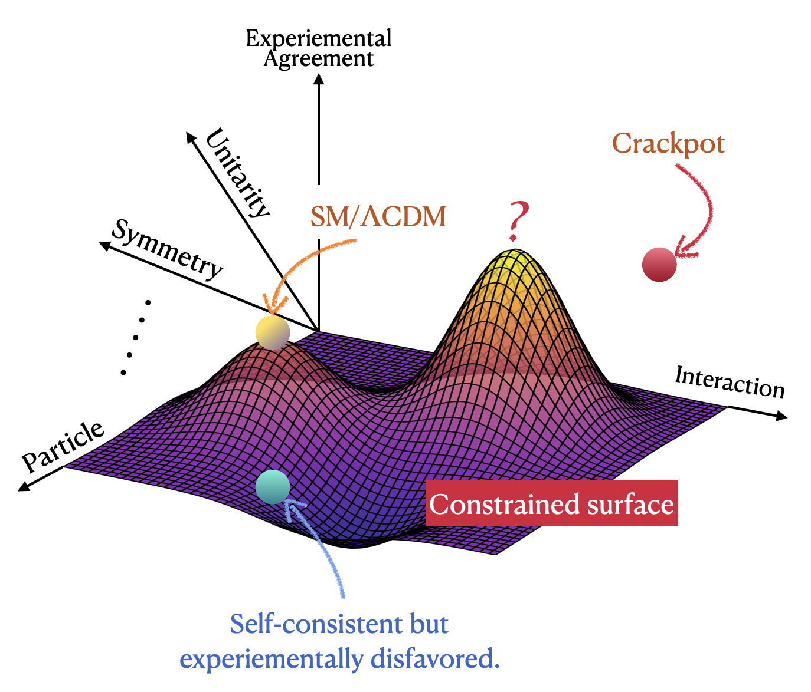

Research Interests ($E = mc^2 + \texttt{AI} ~?$)
The Standard Model of Particle Physics (SM) and the Lambda-Cold Dark Matter (ΛCDM) model are the two most successful theories in physics. SM describes the fundamental particles (smallest building blocks of the universe), while ΛCDM model describes the evolution of the entire universe. Despite their success, they are far from the theory of everything (TOE).

Recently, I have been trying to rethink the theoretical physicist's task in the language of machine learning. As a crude summary of search for theory of everything, our work is nothing but an argmax problem of finding the optimal theory
$$
T^* = \arg \max_{T} \mathcal{L}[\log P(D|T) + \log P(T)],
$$
where the first term measures empirical adequacy and the second term measures theoretical consistency. This equation reduces our task into a constrained optimization problem that AI excels at.
Publications
Comprehensive list of all my publications is available on Hep-Inspire.